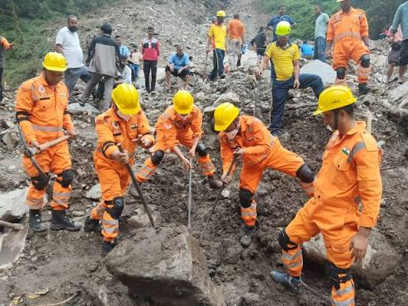
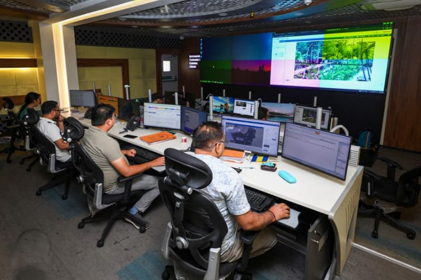
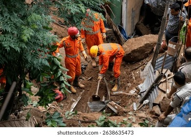
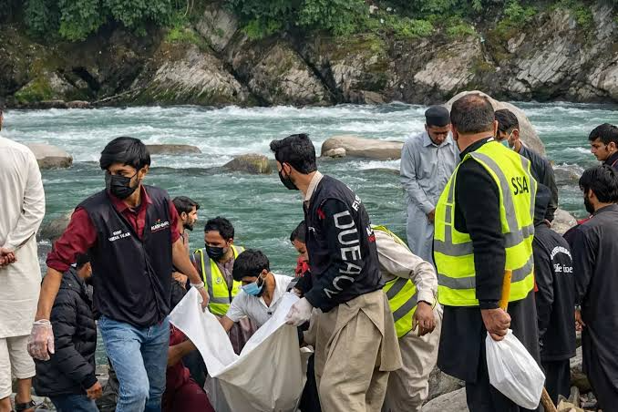
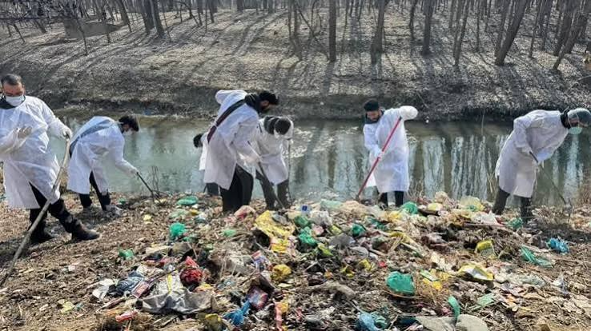
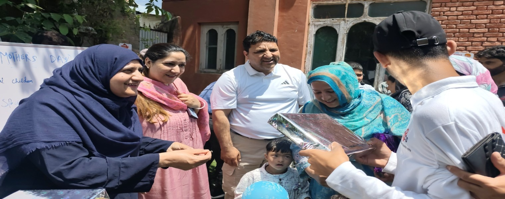
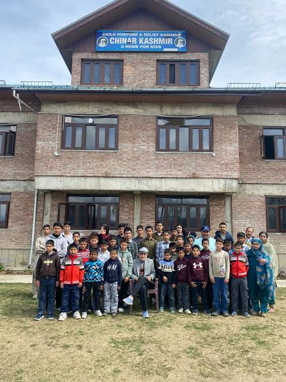
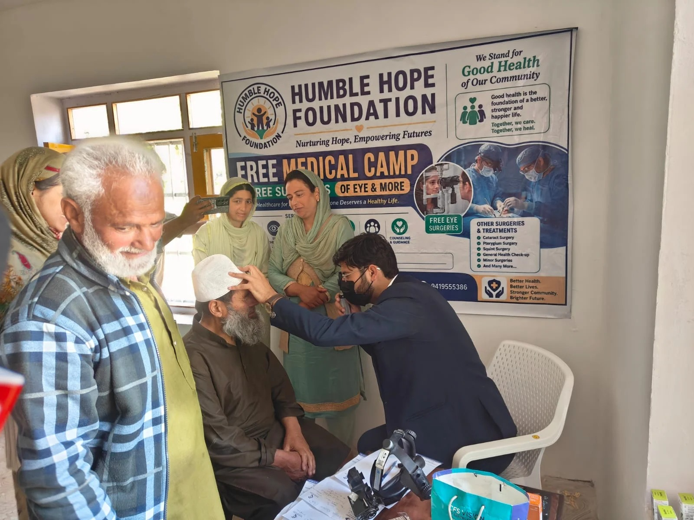
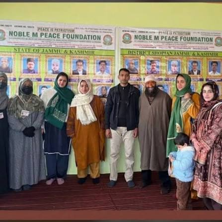
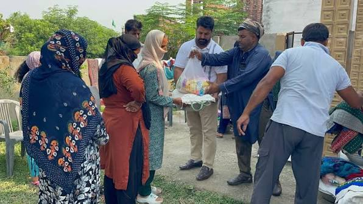

We only suggest trusted, official and verified websites

The Jammu & Kashmir State Disaster Management Authority is a government body responsible for disaster preparedness, mitigation, response, and management across Jammu & Kashmir.
https://jkdisastermanagement.nic.in/
The State Emergency Operations Centre supports emergency coordination, disaster response, information management, and communication during emergencies across Jammu & Kashmir.
https://jkseoc.nic.in/
NDMA is India's national authority for disaster management, working to strengthen disaster preparedness, prevention, mitigation, and coordinated emergency response.
https://ndma.gov.in/
Noble Kashmir Foundation is a non-governmental organisation working to support communities in Kashmir through humanitarian, social, and community development initiatives.
https://www.noblekashmir.com/
CHWRRF is a non-governmental organisation working to provide community support and humanitarian assistance while helping vulnerable people and communities in need.
https://chwrrf.org/
She Hope Society and Hope Disability Centre work to support people with disabilities and vulnerable communities through rehabilitation, inclusion, empowerment, and community-based assistance.
https://hopecentrekashmir.org/
CHINAR International works with communities in Jammu & Kashmir through programmes focused on education, livelihoods, healthcare, youth, and community development.
https://www.chinarinternational.org/
Humble Hope Foundation is a non-governmental organisation working to support vulnerable communities through humanitarian assistance, social welfare, and community development.
https://humblehopefoundation.in/
J&K Peace Foundation works toward peace, community welfare, social development, and support for people and communities across Jammu & Kashmir.
https://www.jkpf.org/
Abhilasha Foundation is a non-governmental organisation working to support disadvantaged communities through social welfare, education, empowerment, and humanitarian initiatives.
https://www.abhilasha-foundation.org/